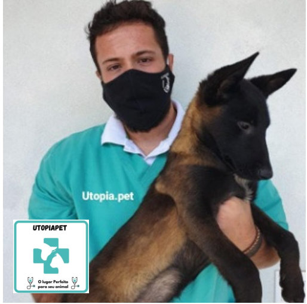

-
Paulo Ribeiro da Silva Junior
 Paulo Ribeiro da Silva Junior é nosso médico Veterinário.
Paulo Ribeiro da Silva Junior é nosso médico Veterinário.- Paulo se formou em 2020 na faculdade UniFAJ.
- Durante sua formação se especializou em reprodução canina,
participando de diversos cursos de especialização em reprodução.
- Paulo possui especialização em cursos em análise, interpretação e
avaliação da composição básica de alimentos industrializados para cães e gatos.
- Trabalhou 2 anos na Unidade de Vigilância de Zoonose de
Jaguariúna-SP. Trabalhou 2 anos em laboratório de morfologia.
- Em 2016 se habilitou como criador, buscando o aprimoramento
genético de cães, alimentação e saúde.
- Paulo atende nas seguintes áreas:
- Clinico geral
- Cirurgia
- Fisioterapia
- Acupuntura
- Vacinação
- Microchipagem
- Entre outros.
